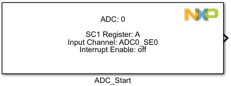
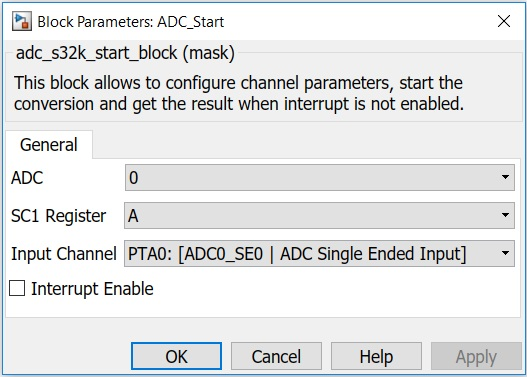

ADC Start Block
This block allows to configure channel parameters, start the conversion and get the result when interrupt is not configured.
Block Image
Inputs:
- None
Outputs:
- data result (uint32)
Parameters and Dialog Box
The block dialog consists of the following tabs:
ADC
Selects the ADC converter number.
SC1 Register
Select which SC1 Register is the source for the trigger.
Input Channel
Selects one of the input channels.
Interrupt Enable
Enables conversion complete interrupts.
Table 1. ADC external channels per package
| Chip | Package | ADC0 | ADC1 |
|---|---|---|---|
| S32K116 | 32 QFN | 9 | NA |
| 48 LQFP | 13 | NA | |
| S32K118 | 48 LQFP | 13 | NA |
| 64 LQFP | 16 | NA | S32K142 | 64 LQFP | 16 | 11 |
| 100 LQFP | 16 | 16 | |
| S32K144 | 64 LQFP | 16 | 11 |
| 100 LQFP | 16 | 16 | |
| 100 MAPBGA | 16 | 16 | |
| S32K146 | 64 LQFP | 16 | 13 |
| 100 LQFP | 16 | 16 | |
| 144 LQFP | 24 | 24 | |
| 100 MAPBGA | 16 | 16 | |
| S32K148 | 144 LQFP | 32 | 32 |
| 100 MAPBGA | 16 | 16 | |
| 176 LQFP | 32 | 32 |
Block Dependency
Please do the following:
- Configure the ADC Config block.
Block Miscellaneous Details
- None
* To get more information refer to Hardware Manual documentation.